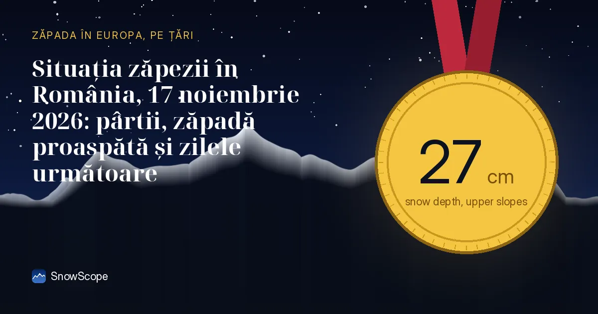

Situația zăpezii în România, 17 noiembrie 2026: pârtii, zăpadă proaspătă și zilele următoare
Stratul de zăpadă în România se întinde pe aproximativ 4.170 km² (marți, 17 noiembrie). Cu 2.460 km² mai puțin decât ieri.
Vezi prognoza de zăpadă pentru Borsec în aplicația SnowScopeGrosimea zăpezii, alerte și harta 3D, gratuit.
Stratul de zăpadă azi
Terenul este în mare parte alb de la aproximativ 1.700 m în sus. Acum o săptămână erau 8.020 km²: de atunci s-au topit 3.850 km².
| Stațiune | Grosimea zăpezii | Zăpadă nouă, 72 h | Zilele următoare | Vârf |
|---|---|---|---|---|
| Borsec | 27 cm | 0 cm | 0 cm | 1.074 m |
| Havas Bucsin | 26 cm | 1 cm | 3 cm | 1.494 m |
| Straja | 19 cm | 2 cm | 1 cm | 1.865 m |
| Pârtia de schi Veresvirág | 19 cm | 0 cm | 0 cm | 1.096 m |
| Parâng | 18 cm | 6 cm | 3 cm | 1.768 m |

Unde a nins
În trei zile, cea mai multă zăpadă proaspătă a căzut aici: Munții Retezat, Munții Parâng și Munții Rodnei (până la 4 cm).
Cel puțin 5 cm de zăpadă nouă acoperă aproximativ 600 km².
Ce înseamnă pentru pârtii
Vremea blândă topește stratul: zăpadă tare dimineața, zăpadă udă după-amiaza.
Cu mai multă zăpadă în prognoză, zilele următoare ar trebui să fie mai bune.
Grosimea zăpezii pe altitudini
Grosimea zăpezii depinde de altitudine: 500–1.000 m: în medie sub 1 cm (1 % acoperit); 1.000–1.500 m: în medie sub 1 cm (8 % acoperit); 1.500–2.000 m: în medie 2 cm (49 % acoperit); 2.000–2.500 m: în medie 9 cm (97 % acoperit).
Cele mai bune stațiuni acum
Pe primul loc este Borsec, cu 27 cm în partea de sus a pârtiilor.
Stațiuni cu zăpadă pe pârtiile de sus: 20 din 52.
Urmează: Havas Bucsin (26 cm), Straja (19 cm), Pârtia de schi Veresvirág (19 cm) și Parâng (18 cm).
Havas Bucsin: 1 cm de zăpadă nouă în trei zile și încă până la 3 cm până vineri, 20 noiembrie.
Zilele următoare
Săptămâna poate aduce până la 12 cm, dintre care până la 8 cm în următoarele trei zile.
Cea mai înzăpezită zi: vineri, 20 noiembrie, cu până la 4 cm.
Sfaturi pentru schiori
- Deasupra pădurii zăpada poate fi spulberată de vânt: atenție pe creste.
- Înainte de freeride citiți buletinul local de avalanșă.
About these numbers
Resort snow depths are the deepest snow on the resort's upper slopes from the SnowScope snow model (about 1 km, run of 17 noiembrie); they are estimates for an area, not a measurement at one point. Station values are measurements on the date shown. Forecasts can change. Always read the official avalanche bulletin before going off-piste.
Cite this report
For research, teaching or the press: the numbers and charts are free to reuse under CC BY 4.0 with this citation.
SnowScope (2026), Situația zăpezii în România, 17 noiembrie 2026: pârtii, zăpadă proaspătă și zilele următoare, https://snowscope.app/blog/ro/2026/11/romania-snow-report-17-november-2026.html, accessed 2026-11-17
SnowScope (Atlas Labs). (2026, November 17). Situația zăpezii în România, 17 noiembrie 2026: pârtii, zăpadă proaspătă și zilele următoare. SnowScope snow reports. https://snowscope.app/blog/ro/2026/11/romania-snow-report-17-november-2026.html
BibTeX
@misc{snowscope2026romaniasnowreport17novem,
author = {{SnowScope (Atlas Labs)}},
title = {Situația zăpezii în România, 17 noiembrie 2026: pârtii, zăpadă proaspătă și zilele următoare},
year = {2026},
month = nov,
howpublished = {\url{https://snowscope.app/blog/ro/2026/11/romania-snow-report-17-november-2026.html}},
note = {Published 2026-11-17 12:53 UTC; accessed 2026-11-17}
}· CC BY 4.0 · Methods, data and tools →
Borsec: snow and temperature by height, this winter vs last (tools) →
Follow Borsec
Gratuit: un mesaj când vine zăpadă nouă și prognoza în fiecare dimineață.